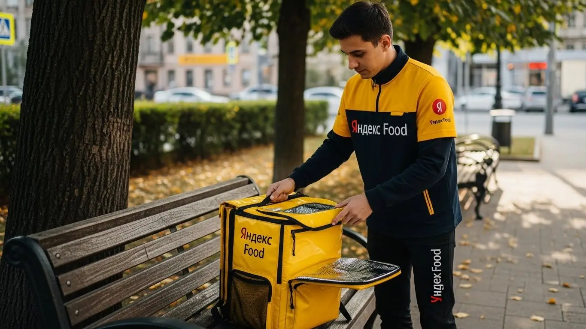

Работа курьером Яндекс Еда в Реутове 2025-2026: доход и условия
- Работа курьером Яндекс Еды в Реутове: для кого эта вакансия и что вы получите
- Сколько вы будете зарабатывать курьером в Реутове: калькулятор дохода и разбор выплат
- Реальный заработок курьера в Реутове: смены и месячный доход
- График работы и форматы занятости
- Требования к кандидату и документы
- Самозанятость, налоги и юридическая чистота
- Пошаговое оформление и первый выход на линию в Реутове
- Пешком, на вело или на авто: что выгоднее в Реутове
- Районы, маршруты и «топовые» зоны заказов в Реутове
- Безопасность, страховка, штрафы и оплата простоя
- Плюсы и возможные минусы работы курьером в Реутове
- Реальные истории и отзывы курьеров из Реутова
- Ответы на главные вопросы о работе курьером Яндекс Еды в Реутове
- Короткие ответы на главные вопросы
- Итоги и ваш следующий шаг
Все города
Здорово, будущий коллега! Думаешь, работа курьером Яндекс Еда в Реутове — это просто крутить педали или руль под бодрую музыку и получать по 5-7 тысяч в день, как обещают в рекламе? Как бы не так. Я тоже так думал, пока не столкнулся с вечной пробкой на Носовихинском шоссе в час пик, разбитыми дорогами в промзоне и клиентами из новостроек на севере, куда без навигатора и не сунешься. Этот гид — не очередная рекламная замануха, а честный разговор о том, что ждёт тебя на улицах именно нашего города, от парня, который знает здесь каждый двор.
Поверь, разница между красивыми цифрами в приложении и реальными деньгами в кармане — колоссальная. Это амортизация твоего велосипеда или машины, налог самозанятого, который надо платить, и хитрая система приоритетов, из-за которой новичок может часами стоять без заказов, пока опытные курьеры снимают все сливки. Чтобы заранее оценить все детали, можно посмотреть сводку условий и воспользоваться калькулятором на странице, где подробно описана работа курьером Яндекс Еда в Реутове. Большинство ребят, которые начинают, сливаются в первый же месяц, потому что не понимают, как устроена логистика между северной и южной частью города и где на самом деле есть спрос, а где — пустые обещания «повышенного коэффициента».
Здесь мы без воды и розовых очков разберём всё по косточкам. Посчитаем, сколько чистыми приносит работа курьером в Яндекс Еде и Лавке в Реутове на велосипеде, пешком и на авто. Я покажу на карте «рыбные» районы с плотными заказами и «мёртвые зоны», куда лучше не соваться. Выясним, как погода и время года влияют на заработок, за что реально штрафуют и как этого избежать. И главное — сравним, где в Реутове выгоднее: в Еде с её ресторанами или в Лавке с её складами.
Меня зовут Алексей. Я сам не один год откатал курьером по Реутову, а сейчас держу небольшой таксопарк-партнёр и вижу всю эту кухню изнутри. Я знаю, где срезать путь, в какое время лучше выходить на смену и какие ошибки совершают 9 из 10 новичков. Моя задача — дать тебе честную информацию, чтобы ты сразу начал зарабатывать, а не разочаровался в этой работе. Так что пристегивайся (или проверяй давление в шинах), сейчас всё разложу по полочкам.
Для начала — короткий гид по главным темам статьи, чтобы ты сразу нашёл то, что волнует больше всего.
Что ты точно узнаешь из этого разбора
В этой статье ты ТОЧНО узнаешь:
- Сколько на самом деле можно заработать в Реутове за смену, и как погода или время суток могут удвоить доход?
- В каких районах Реутова — у ТРЦ или в спальниках — выгоднее всего работать и почему?
- Что лучше выбрать для Реутова: быструю доставку на велосипеде, максимальный охват на авто или экономию пешком?
- Как правильно планировать смены (слоты) в «Яндекс Про», чтобы получать больше заказов и не простаивать?
- За что реально штрафуют и как работает бесплатная страховка, если что-то случится на смене?
А если тебе некогда читать всю статью — переходи сразу к заключению, где ты найдёшь короткие ответы на все эти вопросы и указания, в каких разделах искать подробности.
А вот наглядная инфографика со средними цифрами по Реутову.
Работа курьером в Реутове: ключевые цифры
Доход в час
450-650 ₽
В часы высокого спроса и с бонусами
Доход за смену
3200-4000 ₽
Средний заработок за 8-часовой слот
График работы
Свободный
Выбор слотов от 2 до 12 часов в день
Чаевые от клиентов
~25%
Доля заказов с дополнительным доходом
Особенность Реутова
Плотность
Компактный город с большим числом заказов
Работа курьером Яндекс Еды в Реутове: для кого эта вакансия и что вы получите
Кому подойдёт эта работа в Реутове
Давай начистоту: эта работа не для всех, но для многих — настоящая находка. В первую очередь, это идеальный вариант для студентов: график легко подстроить под лекции, чтобы выходить на пару часов после учёбы и иметь свои деньги на расходы. Также это отличный старт для тех, у кого нет опыта работы. Здесь не спросят диплом и не потребуют резюме на три листа — нужен только смартфон, желание двигаться и здравый смысл.
Многие ребята используют эту вакансию как подработку. У тебя есть основная занятость с 9 до 18? Отлично — выходи на линию в вечерний пик спроса с 19 до 22 или катайся по выходным. Деньги лишними не бывают. Это хороший вариант и для водителей, которые хотят использовать свою машину по максимуму. Если тебе важны понятные условия работы, свободный график и быстрые ежедневные выплаты, эта вакансия в Реутове точно для тебя.
Главные преимущества для жителей районов Центральный, Новокосино-2, Южный
Главное преимущество работы в Реутове — возможность доставлять заказы буквально в своём дворе. Тебе не нужно тратить час-полтора на дорогу до «офиса». Живёшь, например, в Центральном районе, рядом с парком или администрацией — включаешь приложение «Яндекс Про» и через пять минут уже выполняешь первый заказ из ближайшего кафе на улице Ленина.
То же самое касается и крупных спальных районов. Если твой дом в «Новокосино-2», то вокруг тебя десятки многоэтажек, где люди постоянно заказывают еду и продукты. Не нужно ехать через всё МКАД, чтобы найти заказы. Для жителей Южного района, в районе Юбилейного проспекта, ситуация аналогичная: плотная застройка, много магазинов и ресторанов — работа всегда под боком. Это экономит не только время, но и силы, и деньги на проезд.
Кратко о доходе и условиях
Если говорить о деньгах, то цифры в Реутове достойные. При частичной занятости, выходя на 3–4 часа в день, можно спокойно заработать 1500–2000 рублей. Если же рассматривать это как основную работу и уделять ей 8–10 часов, то реальный доход курьера может достигать 3500–4500 рублей за смену. В месяц при полной занятости выходит до 80 000–90 000 рублей, особенно если ты курьер на автомобиле и берёшь выгодные слоты.
Ключевые условия работы, которые привлекают людей, — это свободный график и ежедневные выплаты. Ты сам решаешь, когда доставлять заказы, а заработанные деньги можешь выводить на карту хоть каждый день — для этого достаточно оформить самозанятость. Никакого ожидания аванса и зарплаты. И главное — начать можно без опыта. Пройдёшь короткое онлайн-обучение, получишь термосумку и можешь выходить на линию. Всё просто и прозрачно.
Вот живой пример: у меня работает парень, студент, живёт как раз в «Новокосино-2». Он выходит на линию 4–5 раз в неделю строго с 18:00 до 22:00, катается на велосипеде по своему и соседним кварталам. Заказов вечером хватает, в основном это доставка ужинов из ресторанов и продуктов из магазинов. В среднем за неделю у него выходит 8–10 тысяч рублей чистыми. Ему этого хватает на личные расходы, и учёбе не мешает.
Подводя итог, работа курьером в Реутове — это гибкий и доступный способ заработка, особенно если ты живёшь в густонаселённом районе. Главное — правильно оценить свои силы и выбрать удобный формат. Мой совет новичкам: не гонитесь сразу за дальними заказами, начните работать в своём районе, чтобы освоиться и понять механику процесса.
Сколько вы будете зарабатывать курьером в Реутове: калькулятор дохода и разбор выплат
Из чего складывается доход курьера
Многих пугает сдельный заработок, но на деле система оплаты в Яндекс Еде прозрачная и состоит из нескольких частей. Во-первых, это фиксированная плата за каждый выполненный заказ — за то, что ты его принял, забрал и отдал клиенту. Во-вторых, идёт доплата за расстояние: чем дальше нести или везти заказ, тем больше денег ты получишь. Система сама рассчитывает оптимальный маршрут и начисляет оплату за каждый километр пути.
Кроме этого, есть повышающие коэффициенты. В часы пик (обед, ужин), в плохую погоду или в районах с высоким спросом стоимость заказов умножается на определённый коэффициент. На карте в приложении «Яндекс Про» такие зоны подсвечиваются — это твой главный ориентир для увеличения дохода. Также есть персональные бонусы за выполнение определённого числа заказов и чаевые от клиентов, которые полностью твои.
Есть и два важных момента, которые встречаются не везде: оплата простоя, если ты приехал в ресторан, а заказ ещё не готов, и возможная компенсация проезда на общественном транспорте для пеших курьеров на дальних заказах.
Как пользоваться калькулятором дохода
Чтобы прикинуть свой потенциальный заработок, не нужно гадать. На сайте есть специальный калькулятор, и пользоваться им элементарно: сначала выбираешь свой город — Реутов. Затем указываешь, как планируешь доставлять: пешком, на велосипеде или на своём авто.
Дальше двигаешь ползунки: сколько часов в день и сколько дней в неделю ты готов работать. Например, 4 часа 5 дней в неделю как подработку или 8 часов 6 дней в неделю для полной занятости. На выходе калькулятор покажет примерный диапазон твоего дохода за день и за месяц. Цифры там усреднённые, но дают вполне реалистичное представление, на что можно рассчитывать, и помогают определиться с форматом работы.
Калькулятор дохода курьера в Реутове
Примерный доход в месяц
72 000 ₽
* Расчет основан на средней ставке для Реутова и не учитывает бонусы, чаевые и повышающие коэффициенты в часы пик. Реальный доход может отличаться.
Чтобы увидеть актуальные условия и подать заявку, загляни на страницу про работу курьером Яндекс Еда в твоём городе — там же есть и этот калькулятор, и ответы на другие вопросы.
Примеры расчёта для пешего, вело- и авто‑курьера в Реутове
Давай на конкретных примерах. Пеший курьер, который работает в центре Реутова в районе ТРЦ «Экватор» по 4 часа в вечерний пик, может выполнить 6–8 заказов. С учётом коэффициентов и небольших расстояний его доход составит примерно 1200–1600 рублей за смену.
Велокурьер гораздо мобильнее. Работая 6–7 часов между спальными районами, например, курсируя от Юбилейного проспекта до станции Реутово, он может сделать 12–15 заказов. Его заработок за день будет уже в районе 2200–2800 рублей. Велосипед позволяет быстро перемещаться между многоэтажками, срезая путь через дворы, где машина застрянет.
Курьер на автомобиле имеет самый высокий потенциал дохода. За полную 8–10-часовую смену он может покрывать весь город, брать дорогие заказы на дальние расстояния, например, в промзону или даже в соседнюю Балашиху. Особенно выгодно работать на машине в дождь или снег, когда коэффициенты максимальные. В такой день водитель-курьер в Реутове может заработать и 4000–5000 рублей.
Сравнение форматов доставки в Реутове
| Параметр | Пеший курьер | Велокурьер | Автокурьер |
|---|---|---|---|
| Средний доход в час | 300–450 ₽ | 400–600 ₽ | 500–800 ₽ (без учёта расходов) |
| Радиус доставки | 1–2 км | 3–5 км | Весь город и пригород |
| Расходы | Проезд (иногда компенсируется) | Обслуживание велосипеда | Бензин, амортизация авто |
| Лучшие зоны в Реутове | Центр (ул. Ленина), ТРЦ "Экватор" | Спальные районы ("Новокосино-2", Южный) | Весь город, дальние заказы, промзоны |
Вот ещё один пример из жизни: один из моих водителей, Сергей, начинал как велокурьер. Через пару месяцев понял, что на машине заработок будет выше. Он специально берёт плановые слоты на вечер пятницы и на все выходные. Его стратегия — держаться подальше от центральных пробок, работая по окраинам Реутова и захватывая заказы в Новокосино и Ивановском. В плохую погоду, когда пешие и велокурьеры сидят дома, у него самый сенокос. Стабильно привозит по 25–30 тысяч в неделю, работая только в пиковые часы.
Проще говоря, твой заработок напрямую зависит от способа передвижения и времени, которое ты готов уделять работе. Система оплаты мотивирует выходить на линию в моменты высокого спроса. Мой совет: всегда следи за картой в «Яндекс Про». Фиолетовые зоны с высокими коэффициентами — это твои деньги, поэтому не ленись переместиться на пару кварталов, чтобы работать в такой зоне.
Реальный заработок курьера в Реутове: смены и месячный доход
Давай к самому главному — к деньгам. Без красивых обещаний, только цифры и факты из практики по Реутову. Доход курьера — это не фиксированная зарплата, а результат твоей работы. Сколько потопаешь, столько и полопаешь. Но если подходить к делу с умом, топать придётся не так уж и много, а результат будет радовать.
Диапазон дохода для подработки и полной занятости
Сразу разделим два формата: подработка для души и денег на карманные расходы и полноценная работа. Цифры даю чистыми, уже после вычета налога самозанятого, но без учёта расходов на топливо для автокурьеров.
Если ты выходишь на 2–4 часа в день, например, после основной работы или учёбы, то в Реутове можно рассчитывать на следующие суммы за смену:
- Пеший курьер: 800 – 1 500 рублей. Идеально для работы в одном квартале, например, вокруг станции Реутов или в новостройках на юге города.
- Велокурьер: 1 000 – 1 800 рублей. Велосипед даёт скорость, можно успевать на заказы между северной и южной частями города.
- Автокурьер: 1 500 – 2 500 рублей. На машине ты забираешь самые дальние и дорогие заказы, в том числе в соседнюю Балашиху или московские районы Новокосино и Вешняки.
При полной занятости, когда ты на линии 8–10 часов, цифры совсем другие. Это уже полноценная работа с хорошим доходом:
- Пеший курьер: 2 500 – 3 500 рублей в день. В месяц выходит 50 000 – 70 000 рублей, если работать по графику 5/2.
- Велокурьер: 3 000 – 4 500 рублей в день. Это уже 60 000 – 90 000 рублей в месяц.
- Автокурьер: 4 000 – 6 000 рублей в день. В месяц может набежать и 80 000, и 120 000 рублей, но не забывай вычитать расходы на бензин и обслуживание машины.
Как район, время суток и погода влияют на доход
Твой заработок — это не просто ставка за час. Он постоянно меняется в зависимости от трёх факторов: где, когда и в какую погоду ты работаешь. Понимание этих моментов — ключ к высокому доходу.
Район. В Реутове есть свои «рыбные места». Самые выгодные зоны — это территория вокруг ТРЦ «Реутов Парк» и прилегающие к Носовихинскому шоссе кварталы. Там много ресторанов и магазинов, а значит, и заказов. Также стабильно хороший спрос в северной части города, вдоль Юбилейного проспекта. В часы пик там всегда горят «фиолетовые зоны» — это значит, что к каждому заказу идёт доплата.
Время суток. Золотое правило курьера: работай, когда другие отдыхают. Самые прибыльные часы — это обеденный пик (с 12:00 до 15:00) и вечерний (с 18:00 до 21:00). В пятницу вечером и все выходные спрос максимальный, а коэффициенты могут увеличивать стоимость заказа в 1.5–2 раза. Работать в эти часы выгоднее, чем весь день кататься по пустым улицам.
Погода. Дождь, снегопад или сильная жара — твой лучший друг. Большинство курьеров предпочитают отсидеться дома, а количество заказов взлетает до небес. В такие дни сервис вводит повышенные коэффициенты, чтобы мотивировать курьеров выйти на линию. Плюс, клиенты становятся щедрее на чаевые, потому что ценят твой труд в непростых условиях.
Советы по увеличению заработка от опытных курьеров
Чтобы зарабатывать больше, не обязательно работать сутками. Вот несколько проверенных советов. Во-первых, выбирай правильные слоты. Короткий слот на 4 часа в пятницу вечером может принести больше денег, чем 8 часов работы в понедельник днём. Всегда смотри на карту спроса в приложении «Яндекс Про» перед выбором смены.
Во-вторых, не гоняйся за заказами по всему городу. Выбери одну-две зоны, которые ты хорошо знаешь, например, северную часть от МКАД до ж/д станции. Ты будешь знать все дворы, подъезды и короткие пути, что сэкономит кучу времени и нервов. Время — деньги, и в нашем деле это не пустые слова.
В-третьих, будь гибким. Если есть возможность, сочетай разные виды доставки. В хорошую погоду и в час пик в центре Реутова нет ничего лучше велосипеда. Но если пошёл ливень или прилетел заказ на другой конец города — лучше пересесть на машину. Умение адаптироваться под ситуацию напрямую влияет на твой итоговый доход.
Например, один знакомый курьер на своем авто работал в Реутове. Выходил на линию с 10 утра до 6 вечера, как в офис. Зарабатывал средне, жаловался на пробки и низкие коэффициенты днём. Я ему посоветовал сменить тактику: выходить на два коротких слота — с 12 до 15 и с 18 до 22. Он стал работать те же 7 часов, но только в пиковое время. В итоге его средний дневной заработок вырос почти на треть, а свободного времени днём стало больше.
Короче говоря, чтобы хорошо зарабатывать, нужно не просто «отбывать» смену, а думать головой. Анализируй спрос, лови пиковые часы и плохую погоду, и работай в тех районах Реутова, где всегда есть заказы. Подходи к работе как к своему небольшому бизнесу, и тогда результат тебя не разочарует.
График работы и форматы занятости
Одно из главных преимуществ этой работы — гибкий, практически свободный график. Ты сам себе начальник и сам решаешь, когда и сколько работать. Это открывает возможности и для студентов, и для тех, у кого уже есть основная работа, и для тех, кто хочет сделать доставку своим главным источником дохода.
Подработка после учёбы или основной работы
Совмещать доставку с другими делами проще простого. Вот пара реальных примеров из Реутова.
Пример 1: Студент. Парень учится в колледже и живёт в северной части Реутова. Он выходит на доставки 3-4 раза в неделю по вечерам, примерно с 18:00 до 22:00, катается на велосипеде. В субботу берёт длинный слот на 6-8 часов. Такая подработка приносит ему 25 000 – 35 000 рублей в месяц. Этого с лихвой хватает на личные расходы, и не нужно просить денег у родителей.
Пример 2: Офисный сотрудник. Мужчина работает в Москве, график 5/2. Возвращается домой в Реутов и по пятницам вечером, а также в субботу и воскресенье выходит на линию на своей машине. Для него это способ быстрее закрыть ипотеку. Работа в самые пиковые часы (вечера выходных) приносит ему дополнительные 30 000 – 40 000 рублей в месяц при минимальных затратах времени. Он берёт заказы не только по городу, но и в ближайшие районы Москвы.
Полная занятость: как выглядит типичный день курьера
Если ты решил работать полный день, твой график будет более структурированным, но всё равно гибким. Вот как обычно проходит день у курьера, который сделал доставку своей основной профессией в Реутове.
Он выходит на линию около 10-11 утра, когда начинают поступать первые заказы из ресторанов и магазинов. Работает до обеденного пика, который начинается в 12:00 и длится до 15:00. В это время заказы идут один за другим, времени на отдых почти нет.
После 15:00 наступает затишье. В это время можно спокойно пообедать, съездить по своим делам или даже вернуться домой на час-другой отдохнуть. Главное — быть готовым к вечернему пику, который стартует примерно в 17:30-18:00 и продолжается до 21:00-22:00. Это самое прибыльное время, которое нельзя упускать. После 22:00 спрос падает, и можно завершать смену.
Как планировать слоты и выходы через приложение «Яндекс Про»
Весь твой рабочий процесс управляется через приложение «Яндекс Про». Там ты не только получаешь заказы, но и планируешь свой график. Есть два формата выхода на линию: свободный и по слотам. В свободном формате ты просто нажимаешь кнопку «На линию» и начинаешь работать в любое удобное время. Удобно, но не всегда выгодно.
Плановые слоты — это заранее забронированные смены на определённое время и в определённой зоне. Например, ты можешь забронировать себе слот в зоне «Реутов-Север» с 18:00 до 22:00. Курьеры на плановых слотах получают приоритет при распределении заказов. Кроме того, на таких слотах часто есть гарантированный минимальный доход.
Самое важное — не опаздывать на начало слота. Если ты забронировал смену на 18:00, будь в выбранной зоне и нажми кнопку «Начать» вовремя. Регулярные опоздания снижают твой рейтинг Активности, а это напрямую влияет на количество и качество заказов, которые тебе будут предлагать. Приложение всегда заранее присылает напоминания, так что пропустить начало сложно.
У меня был новичок, который поначалу выходил только на свободные смены, когда ему вздумается. Заработок был нестабильным: то густо, то пусто. Я ему показал, как в «Яндекс Про» бронировать плановые слоты на вечернее время в зонах с высоким спросом. Он начал планировать свою неделю заранее, и его доход не только вырос примерно на 25-30%, но и стал гораздо более предсказуемым.
В итоге, гибкий график — это не анархия. Чтобы он приносил стабильный доход, его нужно планировать. Используй «Яндекс Про» для бронирования выгодных слотов, будь пунктуален и относись к этому как к серьёзной работе, даже если это просто подработка.
Требования к кандидату и документы
Многих новичков пугает бумажная волокита и строгие условия. На деле всё гораздо проще, чем кажется. Давай разберём по пунктам, какие требования к кандидатам и что от тебя потребуется, чтобы начать работу курьером в Реутове. Тут нет ничего сверхъестественного, и большинство вопросов решается за один день.
Возраст, гражданство и базовые условия
Главное и самое строгое правило — тебе должно быть полных 18 лет. Никаких исключений: работа связана с материальной ответственностью, поэтому доступна только для совершеннолетних. По гражданству тоже всё чётко: нужен паспорт РФ или одной из стран ЕАЭС (Беларусь, Казахстан, Армения, Кыргызстан). С другими документами система, к сожалению, работать не даст.
Что касается физической формы, от тебя не требуют олимпийских рекордов, но важно понимать, что это работа на ногах. Если ты пеший курьер, будь готов много ходить. Если велокурьер — крутить педали по несколько часов. Для курьера на автомобиле главное — уверенно водить и иметь исправный транспорт. В общем, нужна обычная выносливость, чтобы отработать смену и не свалиться от усталости.
Какие документы нужны для работы курьером
Чтобы не бегать в последний момент, подготовь небольшой пакет документов заранее. Список простой, и всё это у тебя, скорее всего, уже есть под рукой.
Вот что понадобится:
- Паспорт. Основной документ для подтверждения личности и возраста. Нужен будет для регистрации в приложении Яндекс Про.
- ИНН (Идентификационный номер налогоплательщика). Он необходим для оформления самозанятости. Если не помнишь свой номер или потерял свидетельство, его легко можно узнать за пару минут на сайте ФНС по паспортным данным.
- Банковская карта. Любая карта российского банка на твоё имя. На неё будут приходить ежедневные выплаты. Карта родственников или друзей не подойдёт.
- Медицинская книжка. Обязательна, если планируешь доставлять готовую еду из ресторанов и кафе в Яндекс Еде. Для доставки посылок в Яндекс Доставке или запечатанных товаров из магазинов она может не понадобиться. Но мой совет — сделай её. Это расширит количество доступных заказов и, соответственно, твой потенциальный доход.
Можно ли работать с 16 лет и какие есть альтернативы
Сразу отвечу честно: в Яндекс Еду или Яндекс Доставку устроиться курьером с 16 или 17 лет нельзя. Сервис сотрудничает только с совершеннолетними, то есть с 18 лет. Это требование связано с полной юридической и материальной ответственностью за заказы и денежные средства, которую по закону могут нести только взрослые.
Если тебе ещё нет 18, но очень хочется найти подработку, не отчаивайся. Рассмотри другие варианты, доступные подросткам. Например, можно раздавать листовки, работать промоутером или поискать вакансии в небольших местных компаниях Реутова, которые официально трудоустраивают молодёжь на лето или неполный день. Это будет хороший опыт, а как только исполнится 18 — добро пожаловать в доставку.
Расскажу про одного парня из нашего парка, студента из Реутова. Он думал, что оформление — это ад, и боялся, что без медкнижки его не возьмут, а делать её долго и дорого. Я объяснил, что начать можно и без неё, с доставки посылок, а книжку оформить параллельно. Он так и поступил: заполнил анкету, подготовил паспорт и ИНН, и уже на следующий день вышел на первые заказы. Медкнижку сделал в течение недели в клинике недалеко от станции Реутов, после чего у него сразу открылся доступ к заказам из ресторанов, где доход обычно выше. Вся «бюрократия» заняла минимум времени и не помешала сразу начать зарабатывать.
Как видишь, условия работы и требования к кандидатам вполне стандартные. Главное — быть совершеннолетним, иметь гражданство РФ или ЕАЭС и базовый набор документов. Не нужно бояться формальностей, они созданы для твоей же безопасности и легальности работы. Мой совет: собери все бумаги, проверь сроки действия и смело начинай регистрацию.
Самозанятость, налоги и юридическая чистота
Многих пугает слово «самозанятость» и «налоги». Кажется, что это сложно, муторно и вообще для бизнесменов. На самом деле, для курьера это самый простой и выгодный способ работать официально. Давай разберёмся, почему это так и как устроено оформление статуса плательщика налога на профессиональный доход (НПД). Поверь, здесь нет ничего страшного.

Почему курьеры Яндекс Еды работают как самозанятые
Работа через самозанятость (официально — налог на профессиональный доход, или НПД) — это прямой договор между тобой и сервисом, будь то Яндекс Еда или Яндекс Доставка. Это не «серая» схема, а полностью легальный формат, который даёт тебе несколько важных преимуществ.
Во-первых, твой доход становится официальным. Все деньги, которые ты получаешь на карту, — «белые». Ты можешь взять кредит, получить визу или просто подтвердить свой заработок. Во-вторых, оформление и уплата налогов предельно просты. Тебе не нужен бухгалтер и не придётся сдавать сложные декларации. Всё происходит автоматически через приложение. В-третьих, это безопасно. Ты работаешь по закону, платишь небольшой налог и спишь спокойно, не боясь проверок. Это цивилизованный подход, который защищает и тебя, и сервис.
Как за 10 минут оформить самозанятость через «Мой налог»
Оформление статуса самозанятого занимает меньше времени, чем ты потратишь на чтение этого абзаца. Всё делается онлайн, никуда ходить не нужно.
Вот простая пошаговая инструкция:
- Скачай приложение «Мой налог». Оно есть в Google Play и App Store. Это официальное приложение от Федеральной налоговой службы (ФНС).
- Открой приложение и нажми «Зарегистрироваться». Выбери самый простой способ — «По паспорту РФ».
- Отсканируй паспорт. Просто наведи камеру телефона на главный разворот. Приложение само распознает все данные — проверь, чтобы всё было верно.
- Сделай селфи. Приложение попросит тебя сфотографироваться, чтобы подтвердить личность. Это похоже на разблокировку телефона по лицу.
- Подтверди регистрацию. Приложение отправит данные в налоговую, и через несколько минут ты получишь уведомление, что официально стал самозанятым.
Вот и всё. Никаких заявлений, очередей и госпошлин. Весь процесс действительно занимает 5–10 минут. После этого останется только привязать свой статус в приложении Яндекс Про, и можно выходить на линию.
Сколько и как платить налоги
Теперь о самом главном — о деньгах. Ставка налога для самозанятого курьера, работающего с сервисами Яндекса, составляет 6%. Это налог на доход, который ты получаешь от юридического лица. Если бы ты получал деньги от обычных людей (физлиц), налог был бы 4%, но это не наш случай.
Процесс уплаты налога максимально автоматизирован, тебе не нужно ничего считать самому. Яндекс сам передаёт данные о твоих доходах в налоговую. До 12-го числа каждого месяца в приложении «Мой налог» будет формироваться квитанция. Например, налог за работу в октябре нужно будет заплатить до 28 ноября. Ты получишь уведомление, зайдёшь в приложение и оплатишь налог любой банковской картой. Это проще, чем пополнить баланс телефона. Работая официально, ты избавляешь себя от рисков и получаешь стабильность.
Вот история одного из наших водителей, который долго работал за «серый» кэш в другой конторе. Он боялся налогов как огня, думая, что это отнимет кучу денег и времени. Когда он решил перейти в Яндекс Доставку, его главным страхом была именно самозанятость. Я лично показал ему, как установить «Мой налог» и пройти регистрацию — он был в шоке, что всё заняло семь минут. Через месяц пришла первая квитанция на налог, он оплатил её в два клика и сказал, что это лучшее, что с ним случалось. Теперь у него официальный доход, он без проблем получил автокредит на новую машину для работы и больше не переживает из-за «чёрной» зарплаты.
В итоге, самозанятость — это не проблема, а удобный инструмент, который делает твою работу полностью легальной, прозрачной и безопасной. Не бойся этого шага: оформление элементарное, налог для самозанятых низкий, а процесс уплаты автоматизирован. Это гораздо проще и надёжнее любых неофициальных схем.
Пошаговое оформление и первый выход на линию в Реутове
Многие думают, что устроиться курьером — это долго и муторно, с кучей бумажек и поездок в офис. На деле, чтобы стать курьером в сервисах Яндекса, не нужно проходить семь кругов ада. Весь процесс построен так, чтобы ты мог выйти на линию и получить первые деньги в тот же день или на следующий. Разберём по шагам, как это сделать в Реутове.
Шаг 1–2: анкета и онлайн‑обучение
Всё начинается с простой анкеты на сайте — опыт работы не требуется, никаких резюме и собеседований. У тебя спросят базовые вещи: ФИО, номер телефона, гражданство. Заполнение займёт 5–10 минут.
После этого система проверит данные, что обычно занимает от 15 минут до пары часов. Никуда ехать не нужно, всё оформление проходит онлайн.
Как только анкету одобрят, тебе откроется доступ к короткому обучению. Это не нудные лекции, а несколько видеороликов и инструкций прямо в телефоне. Там объясняют основы: как пользоваться приложением «Яндекс Про», общаться с клиентами и сотрудниками ресторанов, правильно обращаться с заказами. В конце будет небольшой тест, чтобы убедиться, что ты всё понял. Проходишь его — и считай, полдела сделано.
Шаг 3: получение сумки и доступа к заказам в Реутове
Следующий этап — получить главный инструмент, термокороб (или термосумку). Без него система не даст доступ к заказам из ресторанов и магазинов. В Реутове и ближайших районах есть несколько способов его забрать: через курьерские центры или офисы партнёров сервиса. Точные адреса и время работы всегда можно посмотреть в приложении «Яндекс Про» — оно покажет ближайшие точки.
Иногда сумку могут даже привезти доставкой. Как только ты получишь короб и активируешь его в приложении (обычно нужно просто сфотографировать), твой профиль станет полностью активным. С этого момента можно выбирать слоты и начинать выполнять заказы. Это последний шаг перед тем, как ты начнёшь зарабатывать.
Шаг 4: первый слот и первый доход
Теперь самое интересное. Заходишь в «Яндекс Про», открываешь расписание и выбираешь свой первый слот — временной промежуток для работы. Можно взять короткий, на 2–4 часа, чтобы попробовать и освоиться. Для первого раза советую выбрать свой район в Реутове, где ты знаешь каждую улицу. Так будет спокойнее.
Выходишь на линию, и приложение «Яндекс Про» начнёт предлагать заказы, часто уже через несколько минут. Берёшь заказ, следуешь по маршруту, забираешь, отвозишь — и вот, первые деньги уже на балансе. Система позволяет получать выплаты очень быстро, почти ежедневно. Многие ребята зарабатывали свою первую тысячу рублей уже в день регистрации.
Парень из южной части Реутова заполнил анкету в 10 утра, к обеду прошёл обучение. После обеда съездил в курьерский центр у метро «Новокосино» и забрал термокороб. Вечером того же дня он взял слот на 4 часа в своём районе, спокойно доставил 7 заказов и заработал около 1600 рублей, включая чаевые. Он был удивлён, что все условия работы оказались такими простыми и без бюрократии.
В итоге весь процесс от анкеты до первого заработка занимает минимум времени. Главное — не затягивать: заполнил анкету, прошёл обучение, сразу ищи, где забрать сумку. Чем быстрее получишь экипировку, тем быстрее начнут поступать заказы и деньги.
Пешком, на вело или на авто: что выгоднее в Реутове
Выбор транспорта — ключевое решение, которое напрямую влияет на твой доход и комфорт. В Реутове, как и в любом подмосковном городе с плотной застройкой, у каждого способа доставки есть свои плюсы и минусы. Универсально лучшего варианта нет, всё зависит от твоих целей, физической формы и районов, где ты планируешь работать.
Пеший курьер: для центра и плотной застройки в Реутове
Если ты планируешь работать в центральной части Реутова, особенно в районе станции и вдоль Юбилейного проспекта, то пеший курьер — отличный старт. Здесь высокая плотность заказов: много кафе, ресторанов и жилых домов. Расстояния часто не превышают километра. Пешком ты легко обойдёшь любую пробку и сможешь срезать путь через дворы.
Этот формат идеален для коротких слотов по 4–6 часов или в качестве подработки. Главный плюс — никаких затрат на транспорт. Ты просто выходишь из дома и начинаешь зарабатывать. Конечно, доход пешего курьера будет ниже, чем у коллег на колёсах, но для старта и работы в центре это самый простой вариант.
Велокурьер: быстрые доставки между спальными районами
Велосипед в условиях Реутова — это золотая середина. Город достаточно компактный, чтобы пересечь его за 20–30 минут. Это идеальный транспорт для быстрых доставок между северной частью (микрорайоны 6, 6А, 10) и южной (районы у станции, Новокосино-2). Как велокурьер, ты не зависишь от пробок на Носовихинском шоссе или улице Ленина, легко маневрируешь и можешь брать больше заказов в час.
К тому же, это отличный способ поддерживать себя в форме. Расходы минимальны — только обслуживание велосипеда. Велокурьеры стабильно зарабатывают больше пеших за счёт скорости и возможности брать заказы на дальние расстояния. Если у тебя есть велосипед, это твой выбор.
Водитель‑курьер: заказы по всему городу и пригороду Балашихи и Новокосино
Работа курьером на своем авто открывает доступ к самым выгодным заказам. Это дальние доставки по всему Реутову, в соседние районы Москвы (Новокосино, Косино-Ухтомский) и в Балашиху. На машине удобно возить крупные заказы из гипермаркетов, например, из «Ленты» на Носовихинском шоссе. Доход водителя-курьера самый высокий, особенно в часы пик и в плохую погоду. Когда идёт дождь или снег, количество заказов растёт, а пеших и велокурьеров на линии становится меньше.
Конечно, есть и расходы: бензин, амортизация, проблемы с парковкой. Но если подходить к работе с умом и выбирать зоны с высоким спросом, эти расходы окупаются. Работа на авто — это про максимальный заработок и комфорт, особенно для полной занятости.
Сравнение форматов доставки в Реутове
| Параметр | Пеший курьер | Велокурьер | Водитель-курьер |
|---|---|---|---|
| Зоны работы | Центр города, радиус 1–2 км | Весь город, между северной и южной частями | Весь город, пригороды (Балашиха, Новокосино) |
| Средний доход в час | Низкий | Средний | Высокий |
| Плюсы | Нет расходов, можно работать в любой точке центра | Скорость, маневренность, польза для здоровья | Максимальный доход, комфорт, дальние заказы |
| Минусы / Расходы | Низкая скорость, физическая усталость, зависимость от погоды | Нужен велосипед, усталость, сезонность | Расходы на бензин и обслуживание, пробки, парковка |
Один из водителей-курьеров в Реутове выходит на линию только в «хлебные» часы: вечером в будни и на выходных. Он специально ловит заказы из Реутова в Балашиху или на восток Москвы. По его словам, один такой дальний заказ по высокому коэффициенту приносит столько же, сколько пеший курьер зарабатывает за 1,5–2 часа. В плохую погоду его доход за смену может быть в 2–3 раза выше обычного.
В итоге выбор транспорта зависит от твоей стратегии. Для подработки в своём квартале достаточно быть пешим курьером. Для активной работы по всему городу лучшим выбором станет велосипед. А если цель — максимальный заработок, то без машины не обойтись. Начни с того, что у тебя уже есть. Поработаешь, поймёшь специфику города и решишь, стоит ли менять транспорт.
Районы, маршруты и «топовые» зоны заказов в Реутове
Чтобы не кататься вхолостую и получать стабильный доход, нужно понимать карту своего города. Реутов — город компактный, но со своими «рыбными» местами и тихими зонами. Главное правило простое: где люди тратят деньги — там и заказы. Это торговые центры, офисы и густонаселённые жилые массивы.
Твоя задача — научиться читать карту спроса в приложении «Яндекс Про» и совмещать её со знанием города. Поначалу может показаться, что нужно постоянно гоняться за «фиолетовыми» зонами с повышенным коэффициентом, но со временем ты поймёшь, что стабильный поток заказов в знакомом районе часто выгоднее, чем одна дорогая, но дальняя доставка.
Один знакомый водитель-курьер поначалу срывался за каждым заказом с высоким коэффициентом из центра Реутова в Балашиху. По деньгам выходило неплохо, но по факту он сжигал много бензина и времени на обратную дорогу. Когда он переключился на плотную работу в радиусе 3–4 км от ТРЦ «Реутов Парк», его чистый доход за смену вырос на 15–20%, потому что он стал делать больше коротких заказов и меньше простаивать.
Где больше всего заказов: ТРЦ, бизнес‑центры и жилые массивы
Самые прибыльные места — это точки притяжения людей. В Реутове это, в первую очередь, крупные торговые центры. Стабильный поток заказов идёт из ТРЦ «Реутов Парк» на Носовихинском шоссе и ТРЦ «Экватор» на улице Октября. Там расположены фуд-корты с десятками ресторанов, от фастфуда до паназиатской кухни, а также магазины электроники и косметики, откуда часто заказывают экспресс-доставку.
Второй по важности центр активности — район у станции метро «Новокосино», который фактически находится на границе с Реутовом. Здесь всегда высокий спрос, особенно в обеденное время (с 12:00 до 15:00) и по вечерам (с 18:00 до 21:00). В этих зонах часто действуют повышающие коэффициенты, особенно в плохую погоду или в выходные дни, когда люди предпочитают заказывать еду на дом.
Работа в своём районе: примеры для популярных жилых кварталов
Не обязательно каждый раз ехать в центр за заказами. В Реутове много густонаселённых спальных районов, где можно отлично зарабатывать, не уезжая далеко от дома. Например, микрорайоны 6 и 9 на юге города или 10А на севере — это огромные жилые массивы, где на первых этажах домов полно небольших кафе, пиццерий, суши-баров и магазинов вроде «ВкусВилла».
Работая в своём районе, ты получаешь огромное преимущество: ты знаешь все дворы, короткие пути и где лучше припарковаться. Это экономит кучу времени и нервов. Заказы здесь может и не такие дорогие, как из центра в час пик, но их много, и они короткие. Для пешего курьера или курьера на велосипеде работа в таких зонах — одно удовольствие. Ты можешь взять плановый слот на 4 часа и спокойно сделать 8–10 доставок в радиусе пары километров.
Как выбирать зоны и слоты в «Яндекс Про», чтобы не мотаться впустую
Приложение «Яндекс Про» — твой главный инструмент. Основное, на что нужно смотреть, — это карта спроса. Зоны, подсвеченные разными оттенками фиолетового, показывают, где заказов сейчас больше всего и действуют повышающие коэффициенты. Чем насыщеннее цвет — тем выше доплата. Но не стоит слепо гнаться за самым ярким пятном на карте.
Смотри на ситуацию комплексно. Если ты водитель-курьер и находишься в южной части Реутова, а самый высокий коэффициент горит у станции Реутов на севере, подумай, сколько времени ты потратишь на дорогу через городские пробки. Иногда выгоднее остаться в своей зоне с чуть меньшим коэффициентом, но выполнить за это время 2–3 заказа. Планируй слоты заранее, особенно на вечернее время и выходные — так у тебя будет гарантия минимального дохода, даже если заказов будет мало.
Сравнение рабочих зон в Реутове
| Параметр | Зона у ТРЦ («Реутов Парк», «Экватор») | Спальный район (мкр. 6, 9, 10А) |
|---|---|---|
| Плотность заказов | Очень высокая в часы пик (обед, вечер) | Стабильная, равномерная в течение дня |
| Средний чек заказа | Выше (заказы из ресторанов, магазинов) | Средний (пицца, суши, продукты) |
| Расстояние доставки | Часто средние и дальние | В основном короткие, в пределах района |
| Конкуренция | Высокая, много курьеров | Умеренная |
| Кому подходит | Авто- и велокурьерам, готовым к динамике | Пешим и велокурьерам, ценящим стабильность |
В итоге, знание районов Реутова напрямую влияет на твой заработок. Не бойся экспериментировать: попробуй поработать и в центре у ТРЦ, и в своём жилом квартале, чтобы понять, какой формат подходит именно тебе. Новичкам я всегда советую начинать со своего района: так ты быстрее освоишься с приложением и процессом, не тратя нервы на пробки и поиск адресов в незнакомых местах.
Безопасность, страховка, штрафы и оплата простоя
Работа курьера, как и любая работа «в полях», связана с определёнными рисками. Ты проводишь много времени на улице, в движении, общаешься с разными людьми. Поэтому важно понимать, как ты защищён, и какие правила нужно соблюдать, чтобы работа приносила только доход и удовлетворение, а не проблемы.
Хорошая новость в том, что Яндекс серьёзно относится к безопасности партнёров. Есть чёткие механизмы защиты, начиная от страховки и заканчивая круглосуточной поддержкой. Но многое зависит и от тебя самого: от твоего поведения на дороге и умения спокойно решать рабочие моменты. Главное — не паниковать и знать, куда обращаться в сложной ситуации.
Давай на примере. Один знакомый велокурьер прошлой зимой поскользнулся на льду и сильно ушиб руку. Заказ, к счастью, не пострадал. Он сразу же написал в поддержку через «Яндекс Про», объяснил ситуацию. Ему помогли отменить заказ без штрафа, а потом он обратился в травмпункт. Так как он был на плановом слоте, сработала страховка, которая покрыла расходы на лечение. Это реальный пример того, что ты не остаёшься один на один с проблемой.
Бесплатная страховка на сменах и что она покрывает
Когда ты выходишь на плановый слот в Яндекс Про, твоя жизнь и здоровье автоматически страхуются. Это бесплатно, ничего дополнительно оформлять не нужно. Страховка действует с момента начала слота и до его окончания. Она покрывает несчастные случаи, которые могут произойти во время доставки: попал в ДТП, упал с велосипеда, поскользнулся, укусила собака — ситуации бывают разные.
Сумма покрытия доходит до 2 миллионов рублей, в зависимости от тяжести травмы. Страховка может компенсировать расходы на лечение, временную нетрудоспособность и так далее. Если что-то случилось, первый шаг — обеспечить свою безопасность, второй — немедленно связаться со службой поддержки в приложении. Они дадут чёткую инструкцию, что делать дальше для оформления страхового случая. Это важная гарантия, которая даёт уверенность на линии.
Правила безопасности на дороге и при доставке
Это база, которую нужно знать как «Отче наш». Для пеших курьеров главное — переходить дорогу только по пешеходному переходу и на зелёный свет, быть внимательным во дворах, откуда может выехать машина. Для курьеров на велосипеде — обязательно использовать фонари в тёмное время суток, носить шлем (рекомендую!), соблюдать ПДД и быть предсказуемым на дороге. Не виляй между машинами, показывай манёвры рукой.
Для водителей-курьеров правила стандартные: не нарушать скоростной режим, не отвлекаться на телефон за рулём, парковаться аккуратно, чтобы не мешать другим. В любую погоду, особенно в дождь или снегопад, снижай скорость и увеличивай дистанцию. Что касается заказов — всегда проверяй упаковку. Если что-то протекает или повреждено, лучше сразу сообщи в поддержку. И будь вежлив с клиентами, даже если у них плохое настроение — это сбережёт твои нервы и рейтинг.
Какие бывают штрафы и как их избежать
Да, в сервисе есть система штрафов, или, как их ещё называют, депремирования. Но это не способ отобрать у тебя деньги, а механизм контроля качества. Штрафы применяются только за серьёзные нарушения. Например, за грубость клиенту или сотруднику ресторана, за порчу или кражу заказа, за регулярные сильные опоздания на слот без уважительной причины.
Избежать их проще простого: работай на совесть. Будь вежлив, аккуратен с заказами, вовремя выходи на линию. Если понимаешь, что опаздываешь за заказом или к клиенту из-за пробки или другой проблемы, — не молчи. Напиши в чат поддержки, предупреди клиента. Большинство проблем можно решить коммуникацией. Помни, что твой рейтинг в приложении — это твой актив. Высокий рейтинг даёт приоритет в распределении заказов.
Что такое оплата простоя и как она защищает твой доход
Это одна из ключевых фишек работы с Яндексом, которая реально защищает твой доход. Оплата простоя — это гарантия минимального заработка, даже если заказов временно нет. Работает это на плановых слотах. Ты выбираешь время и зону, выходишь на линию, но заказы по какой-то причине не поступают.
В этом случае сервис начисляет тебе минимальную плату за то время, что ты находишься онлайн и готов принимать заказы. Сумма зависит от города и спроса, но сам факт её наличия — это мощная подстраховка. Ты можешь быть уверен, что не потратишь время впустую. В других сервисах, где платят строго за заказ, простой означает нулевой доход. Здесь же твоё время ценят, и это большой плюс к стабильности заработка.
Риски в работе и как от них защититься
| Возможный риск | Как Яндекс помогает защититься | Что делать курьеру |
|---|---|---|
| Травма на смене (ДТП, падение) | Бесплатная страховка жизни и здоровья | Сразу сообщить в поддержку, следовать инструкциям |
| Конфликт с клиентом | Круглосуточная служба поддержки | Сохранять спокойствие, быть вежливым, при необходимости писать в чат |
| Отсутствие заказов | Механизм оплаты простоя на плановых слотах | Выбирать слоты в зонах с высоким спросом, быть на связи |
| Порча заказа (не по вине курьера) | Поддержка помогает списать заказ без штрафа | Проверять упаковку в ресторане, сразу фотографировать и сообщать о проблеме |
Подводя итог, безопасность и защита — это улица с двусторонним движением. Сервис даёт инструменты — страховку, поддержку, оплату простоя. Твоя задача — пользоваться ими с умом и соблюдать базовые правила адекватности и осторожности. Если подходить к работе ответственно, то никаких проблем не возникнет, а доход будет стабильным и предсказуемым.
Плюсы и возможные минусы работы курьером в Реутове
Как и в любом деле, здесь есть две стороны медали. Я всегда говорю парням честно: работа курьером в сервисах Яндекса — это не лёгкие деньги, а нормальный труд. Но труд, у которого есть весомые преимущества перед офисной или заводской рутиной. Важно взвесить все плюсы и минусы заранее, чтобы потом не было разочарований.
Сильные стороны работы курьером в Реутове
Давай по порядку разберём, почему многие выбирают эту работу и остаются в ней надолго. Это не просто рекламные лозунги, а реальные вещи, которые ценят курьеры.
- Гибкий график. Это, пожалуй, главный козырь. Ты сам решаешь, когда выходить на линию и на сколько. Можно взять слот на 4 часа после основной работы, а можно откатать полный 12-часовой день. Никто не стоит над душой с графиком отпусков и не отчитывает за опоздания. Для студентов, молодых родителей или тех, кто ищет подработку, — идеальный вариант.
- Ежедневные выплаты. Забудь про «зарплату 25-го и аванс 10-го». Деньги за выполненные заказы приходят на карту практически сразу. Это очень дисциплинирует и даёт ощущение контроля над своими финансами. Нужны деньги на срочный ремонт или подарок — вышел на линию, поработал, получил.
- Работа рядом с домом. Реутов — город компактный, и ты можешь выбрать для работы свой район. Живёшь в северной части, у станции Реутов, — работаешь там. Обитаешь на юге, у метро «Новокосино», — катаешь по своему району. Не нужно тратить по полтора часа на дорогу до работы и обратно, как многие, кто мотается в Москву.
- Поддержка и страховка. Ты не один в поле воин. На смене у тебя всегда есть связь с поддержкой через приложение «Яндекс Про», которая поможет решить любой вопрос: от проблем с адресом до общения со сложным клиентом. Плюс, пока ты на линии, твоя жизнь и здоровье застрахованы. Это важное условие работы, которое даёт уверенность.
- Официальный доход. Работа через самозанятость — это полностью «белая» схема. Ты платишь небольшой налог, но при этом твой доход официален. Это значит, что ты можешь спокойно взять кредит, подтвердить свой заработок и не бояться никаких проверок. Оформление статуса самозанятого занимает 10 минут через телефон.
С какими сложностями чаще всего сталкиваются курьеры
Теперь о том, к чему нужно быть готовым. Идеальной работы не бывает, и здесь тоже есть свои нюансы. Но, как говорится, предупреждён — значит вооружён.
- Физическая нагрузка. Если ты пеший курьер или велокурьер, будь готов много двигаться. За день можно намотать 15–20 километров, да и термокороб за спиной добавляет веса. С непривычки ноги будут гудеть. Мой совет: начинай с коротких смен по 3–4 часа и обязательно купи удобную, качественную обувь. Это не та статья расходов, на которой стоит экономить.
- Работа в плохую погоду. Дождь, снегопад, мороз или летний зной — доставка нужна всегда. Работать в таких условиях тяжело, но есть и плюс: в плохую погоду всегда включаются повышающие коэффициенты, и заказов становится больше. Главное — правильно экипироваться: непромокаемая куртка, термобельё зимой, запасные носки.
- Возможные простои. Бывают часы, особенно днём в будни, когда заказов меньше. Сидеть и ждать — неприятно. Чтобы этого избежать, изучай карту спроса в приложении. Выбирай зоны, где горит «фиолетовый» — это значит, там сейчас не хватает курьеров. В Реутове это обычно районы у ТРЦ «Реутов Парк» или скопления кафе на Юбилейном проспекте. К тому же, у сервиса есть оплата за простой, если ты на плановом слоте, что частично компенсирует ожидание.
- Общение с разными клиентами. 99% людей — адекватные и вежливые. Но иногда попадаются и те, кто чем-то недоволен. Важно сохранять спокойствие, быть вежливым и не вступать в конфликт. Если ситуация сложная, лучше сразу написать в поддержку и следовать их инструкциям.
У меня был парень, пришёл устраиваться. Работал до этого на складе, график 2/2, устал от рутины и начальства. Он сомневался, потянет ли физически и не просядет ли по деньгам. Мы с ним сели, посчитали. Он решил попробовать как водитель-курьер на своем авто в выходные дни.
За первый же уикенд, работая по 6-7 часов в пиковое время по южной части Реутова и захватывая Новокосино, он сделал около 7000 рублей чистого дохода. Да, устал, но говорит, что это совсем другая усталость — когда ты сам себе хозяин и видишь результат сразу на балансе. Через месяц он уволился со склада и теперь катает на полную ставку.
Одним словом, работа курьером — это не сказка, а реальный труд со своими плюсами и минусами. Главное — это свобода и быстрые деньги. Но за это приходится платить физической нагрузкой и работой в любую погоду. Мой совет: перед тем как уходить с основной работы, попробуй покатать в выходные или по вечерам. Так ты поймёшь, твоё это или нет, без всякого риска.
Кому такая работа подходит, а кому лучше поискать другой формат
Давай начистоту. Эта работа подходит не всем. Важно трезво оценить себя и свои ожидания, чтобы не тратить время зря.
Эта работа точно для тебя, если ты:
- Активный и не любишь сидеть на месте. Если мысль о восьми часах в душном офисе наводит на тебя тоску, а движение — это жизнь, то ты найдёшь себя в доставке.
- Студент или ищешь подработку. Возможность совмещать с учёбой или основной работой — ключевое преимущество. Ты сам строишь свой график, а не подстраиваешься под него.
- Ценишь независимость. Здесь нет начальников в классическом понимании. Ты сам себе босс, сам планируешь свой день, свой доход и работаешь в свободном графике.
- Хочешь получать деньги здесь и сейчас. Если тебе важен быстрый и регулярный доход без задержек, ежедневные выплаты станут решающим фактором.
А вот в каких случаях лучше поискать что-то другое:
- Ты не переносишь физические нагрузки и плохую погоду. Если ты предпочитаешь комфорт и тепло, то работа «в полях» будет для тебя пыткой.
- Тебе нужна абсолютная стабильность. Доход курьера в Яндекс Еде может колебаться в зависимости от сезона, дня недели и даже погоды. Если тебе нужна твёрдая зарплата до копейки каждый месяц, лучше выбрать офисный формат.
- Ты командный игрок и не можешь без коллектива. Работа курьера — это в основном работа в одиночку. Если тебе жизненно необходимо общение с коллегами, шутки в курилке и корпоративы, здесь этого не будет.
Реальные истории и отзывы курьеров из Реутова
Теория — это хорошо, но лучше всего о работе говорят реальные отзывы курьеров, которые каждый день выходят на линию в нашем городе. Я собрал несколько типичных историй, чтобы ты увидел картину изнутри.
История студента МИРЭА, который совмещает учёбу и доставку
Кирилл, 20 лет, велокурьер:
«Я учусь в реутовском филиале МИРЭА, живу в 10-м микрорайоне. Раньше просил деньги у родителей, было неловко. Решил попробовать себя в Яндекс Еде. Купил недорогой велосипед и начал катать. Обычно выхожу после пар, часа на 3–4, плюс беру почти полную смену в субботу. В основном работаю в своём районе и у метро «Новокосино», тут много заказов из Яндекс Лавки и ресторанов. В среднем за неделю выходит 8–10 тысяч рублей. Для меня это отличные деньги: хватает и на кафе с девушкой, и на новые кроссовки, и родителям уже не так на шее сижу. Главное — не лениться и выходить на линию регулярно».
Опыт автокурьера, который выходит в пиковые часы
Виктор, 38 лет, водитель-курьер:
«У меня есть основная работа со сменным графиком, но ипотеку никто не отменял. Поэтому в свои выходные и по вечерам я подрабатываю в Яндекс Доставке на своем авто. Моя стратегия — выходить только в самое «жирное» время: обеденный пик с 12 до 14 и вечерний с 18 до 21, когда коэффициенты максимальные. На машине я не ограничен одним районом — могу взять заказ из «Ленты» на Носовихинском шоссе и отвезти его в северную часть Реутова, а оттуда забрать заказ из ресторана для Яндекс Еды и поехать в Новокосино. Особенно выгодно возить большие продуктовые заказы, которые пешему не унести. Такой формат позволяет за 4–5 часов работы сделать столько же, сколько другой за полный день. Меня это полностью устраивает».
Мнение пешего курьера о работе в центре и спальниках
Анна, 24 года, пеший курьер:
«Я работаю как пеший курьер в Яндекс Еде, для меня это как фитнес, за который ещё и платят. В Реутове я для себя выделила две основные зоны. Первая — это условный «центр» у станции, улицы Ленина и Юбилейный проспект. Плюсы: куча кафе, заказы идут один за другим, короткие расстояния. Минусы: много людей, иногда приходится долго ждать заказ в ресторане в час пик. Вторая зона — это спальные районы, например, новостройки в 6А микрорайоне. Там спокойнее, клиенты часто оставляют хорошие чаевые. Но и расстояния между домами больше, а в многоэтажках можно потерять время в ожидании лифта. Я обычно комбинирую: днём работаю в центре, а вечером, когда люди заказывают ужины и продукты домой, смещаюсь в спальники».
Как видишь, отзывы курьеров Яндекса в Реутове разные, но суть одна: люди находят в этой работе то, что им нужно. Студент — деньги на карманные расходы и свободу от родителей, семейный человек — весомую прибавку к зарплате, а кто-то — просто активный образ жизни. Главное — найти свой ритм, свой район и свой формат работы в доставке. В Реутове для этого есть все возможности.
Ответы на главные вопросы о работе курьером Яндекс Еды в Реутове
Здесь я собрал ответы на те вопросы, которые мне задают чаще всего новички. Без воды, только по делу, чтобы у тебя не осталось сомнений и страхов перед выходом на линию.
Ответы на ключевые вопросы кандидатов
Нужно ли оформлять самозанятость и как платить налоги?
Да, обязательно. Работа курьером в Яндекс Еде — это официальная деятельность, поэтому все проходят через оформление статуса самозанятого (НПД). Не пугайся этого слова, всё гораздо проще, чем кажется. Регистрация занимает 10 минут через приложение «Мой налог», нужен только паспорт.
Налог для самозанятого, работающего с юрлицами вроде Яндекса, составляет 6%. Приложение само считает сумму налога с твоего дохода, тебе остаётся только нажать кнопку «Оплатить» раз в месяц. Это честное и официальное оформление, которое защищает тебя от любых проблем с налоговой. Никакой сложной бухгалтерии и отчётов — всё автоматизировано.
Какой телефон и интернет нужны для работы курьером?
Основные требования к смартфону для работы курьером простые. Понадобится телефон на базе Android версии 7.0 и выше. Приложение «Яндекс Про», через которое ты будешь получать заказы, на айфонах у курьеров не работает. Важно, чтобы телефон хорошо держал зарядку, потому что GPS и интернет её быстро расходуют. Мой совет — сразу купи хороший пауэрбанк, он спасёт тебя в долгую смену.
Интернет должен быть стабильным и быстрым. Ты будешь постоянно на связи с сервером, использовать карты, общаться с поддержкой и клиентами. Любой крупный оператор с хорошим покрытием в Реутове подойдёт.
Что будет, если в смену мало заказов — как работает оплата простоя?
Это одно из главных преимуществ в условиях работы от Яндекса. Если ты вышел на запланированный слот, а заказов в твоей зоне действительно мало, сервис начисляет минимальную гарантированную оплату за час. То есть ты не будешь сидеть бесплатно в ожидании. Это своего рода страховка твоего времени и дохода.
Конечно, на одних гарантиях много не заработаешь, но это отличная подстраховка в «тихие» часы или в дни, когда спрос падает. В других сервисах доставки такого часто нет: нет заказов — нет денег.
Есть ли в Яндекс Еде штрафы и за что их могут применить?
Давай по-честному: система штрафов есть, но я бы назвал это системой мотивации. Тебя не будут наказывать за каждую мелочь. Штрафы, снижение приоритета или временные блокировки применяют за серьёзные нарушения: грубость клиенту, порча заказа, сильное опоздание на слот без предупреждения или если ты просто не вышел на смену, которую забронировал.
Если работать нормально, соблюдать простые правила вежливости и стандарты сервиса, ты с этим не столкнёшься. Главное — если что-то пошло не так (проколол колесо, попал в пробку), сразу пиши в поддержку через «Яндекс Про». Они помогут решить проблему, и никаких санкций не будет.
Сколько реально можно заработать курьером в Реутове и чем эта вакансия лучше других сервисов?
Реальный заработок курьера в Реутове зависит от занятости. Если это подработка по 3–4 часа в день, можно спокойно получать 1500–2500 рублей. Если же работать полный день по 8–10 часов, то зарплата может доходить и до 4000–5000 рублей в день. Особенно высокий доход у курьеров на велосипеде или на своем авто в выходные или плохую погоду, когда действуют повышенные коэффициенты.
Главное отличие от многих конкурентов — это экосистема Яндекса. В одном приложении «Яндекс Про» тебе могут приходить заказы не только из ресторанов (Яндекс Еда), но и из магазинов (Яндекс Доставка) и дарксторов (Яндекс Лавка). Это увеличивает плотность заказов и, соответственно, твой итоговый доход. Плюс, как я уже говорил, оплата простоя и бесплатная страховка жизни и здоровья на время смены — это серьёзные гарантии, которых у других часто нет.
Можно ли работать без опыта и что будет на обучении?
Конечно, это работа без опыта. Большинство курьеров приходят с нуля. Перед выходом на линию ты пройдёшь короткое онлайн-обучение. Это несколько видеороликов и небольшой тест, чтобы убедиться, что ты всё понял.
На обучении тебе расскажут, как пользоваться приложением «Яндекс Про», как правильно общаться с клиентами и представителями ресторанов, что делать в нестандартных ситуациях. Всё просто и по делу, занимает буквально пару часов. Главное — твоё желание работать и зарабатывать.
Берут ли с 16–17 лет и какие есть ограничения по возрасту?
Здесь всё строго: на работу курьером в Яндекс Еду берут только с 18 лет. Это связано с тем, что нужно оформлять статус самозанятого и нести материальную ответственность за заказы. Никаких исключений для 16-летних или 17-летних, даже с согласия родителей, нет. Так что, если тебе ещё нет 18, придётся немного подождать.
Нужно ли покупать термокороб и сколько он стоит?
Термокороб или термосумку покупать не обязательно. Сервис или его партнёры выдают брендированную экипировку. Иногда её можно получить бесплатно, иногда — взять в аренду за символическую плату, которая списывается с твоего баланса. Также можно использовать свой собственный термокороб, если он подходит по размерам и требованиям сервиса. Главное — без него система не даст доступ к заказам еды.
Что делать, если я повредил заказ или попал в ДТП на смене?
Первое правило — без паники. Если что-то случилось, твоя безопасность важнее всего. Сразу же свяжись со службой поддержки через чат в приложении «Яндекс Про» и подробно опиши ситуацию. Если попал в ДТП, сообщи об этом и вызови необходимые службы. Если повредил заказ, сфотографируй повреждения и отправь в поддержку. Они подскажут, как действовать дальше, и помогут отменить заказ без штрафа, если это не твоя вина. А если ты на плановом слоте, помни про бесплатную страховку жизни и здоровья.
Короткие ответы на главные вопросы
Собрали здесь краткую шпаргалку по самым важным моментам из статьи. Если что-то забыл — заглядывай сюда.
Короткие ответы: главное из статьи по существу
Короткие ответы на ключевые вопросы
Сколько на самом деле можно заработать в Реутове за смену, и как погода или время суток могут удвоить доход?
На подработке (3–4 часа) реальный доход составляет 1500–2500 ₽, при полной занятости — до 4000–5000 ₽. Заработок резко возрастает в пиковые часы (обед, ужин), в выходные и в плохую погоду за счёт повышенных коэффициентов, которые увеличивают стоимость каждого заказа.
→ Подробнее читай в разделе «Реальный заработок курьера в Реутове: смены и месячный доход».В каких районах Реутова — у ТРЦ или в спальниках — выгоднее всего работать и почему?
Самые прибыльные зоны — у ТРЦ «Реутов Парк» и «Экватор», где много ресторанов и магазинов. Однако в густонаселённых спальных районах (Новокосино-2, Южный) стабильный поток коротких заказов, что идеально для работы рядом с домом без лишних поездок.
→ Подробнее читай в разделе «Районы, маршруты и «топовые» зоны заказов в Реутове».Что лучше выбрать для Реутова: быструю доставку на велосипеде, максимальный охват на авто или экономию пешком?
Пеший формат подходит для центра с плотной застройкой. Велосипед — лучший баланс скорости и затрат для работы по всему городу. Автомобиль даёт самый высокий доход за счёт дальних и крупных заказов, особенно в дождь или снег.
→ Подробнее читай в разделе «Пешком, на вело или на авто: что выгоднее в Реутове».Как правильно планировать смены (слоты) в «Яндекс Про», чтобы получать больше заказов и не простаивать?
Выбирайте плановые слоты в приложении — они дают приоритет в заказах и гарантируют минимальный доход, даже если заказов мало. Всегда следите за картой спроса и выбирайте «фиолетовые» зоны, а также не опаздывайте на начало смены, чтобы не терять рейтинг.
→ Подробнее читай в разделе «График работы и форматы занятости».За что реально штрафуют и как работает бесплатная страховка, если что-то случится на смене?
Штрафы применяют за серьёзные нарушения: грубость клиенту, порчу заказа или регулярные опоздания. На всех плановых сменах действует бесплатная страховка жизни и здоровья до 2 млн рублей, которая покрывает травмы, полученные во время доставки.
→ Подробнее читай в разделе «Безопасность, страховка, штрафы и оплата простоя».
Для полного понимания темы рекомендую прочитать всю статью — там ты найдёшь примеры, сравнения и дельные советы из практики.
Итоги и ваш следующий шаг
Краткие выводы по работе курьером в Реутове
Работа курьером в Яндекс Еде в Реутове — это реальная возможность зарабатывать от 35 000 до 80 000 рублей в месяц, в зависимости от твоей занятости и способа передвижения. Главные плюсы — это свободный график, который ты сам себе составляешь, и ежедневные выплаты на карту. Условия работы прозрачны: ты видишь стоимость каждого заказа, а такие вещи, как оплата простоя и страховка, защищают твой доход и здоровье.
По сравнению с другими сервисами, Яндекс выигрывает за счёт своей экосистемы — заказы из Еды, Лавки и Доставки обеспечивают стабильный поток. Это не просто подработка, а полноценный инструмент для заработка, доступный каждому, кто готов двигаться и хочет получать деньги за свой труд здесь и сейчас.
Как сделать первый шаг уже сегодня
Чтобы стать курьером, не нужно долго ждать. Весь процесс от заявки до первого заработка можно пройти за один день. Вот простой план:
- Заполни анкету. Это займёт не больше 10 минут. Нужны базовые данные о себе.
- Подготовь документы. Тебе понадобятся паспорт, ИНН и реквизиты банковской карты. Параллельно скачай приложение «Мой налог» и зарегистрируйся как самозанятый — это тоже быстро.
- Пройди онлайн-обучение. Посмотри короткие видео и ответь на несколько вопросов, чтобы подтвердить, что ты понял основные правила работы.
- Получи термокороб и выбери первый слот. После активации ты сможешь забрать фирменную термосумку, зайти в приложение «Яндекс Про», выбрать удобный район и время в Реутове и выйти на линию. Первые деньги могут быть на твоей карте уже сегодня вечером.